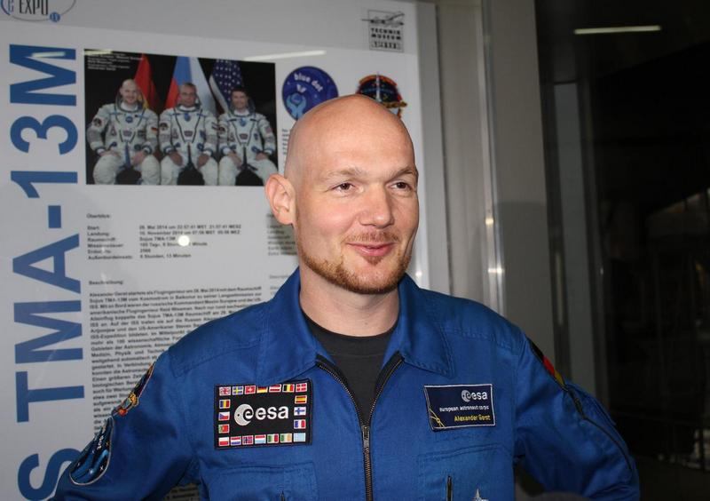
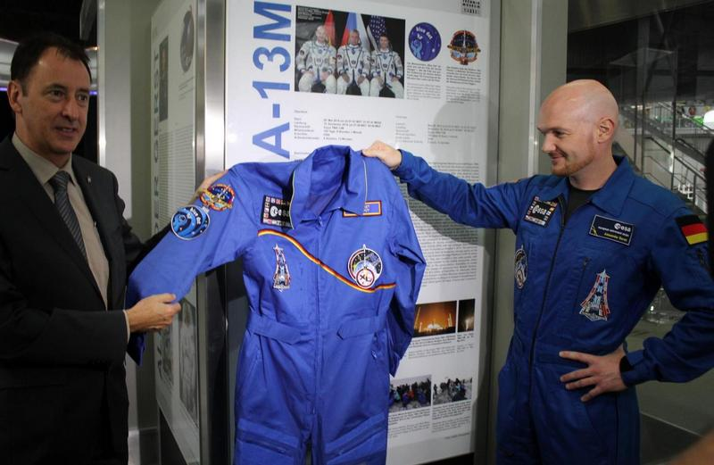
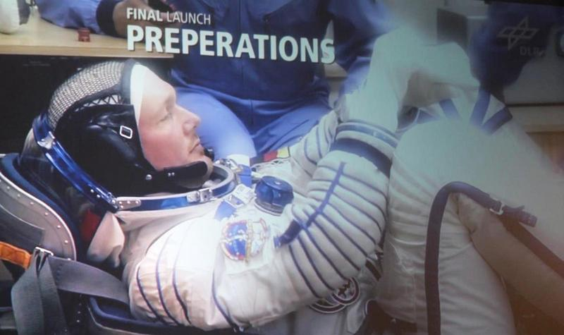
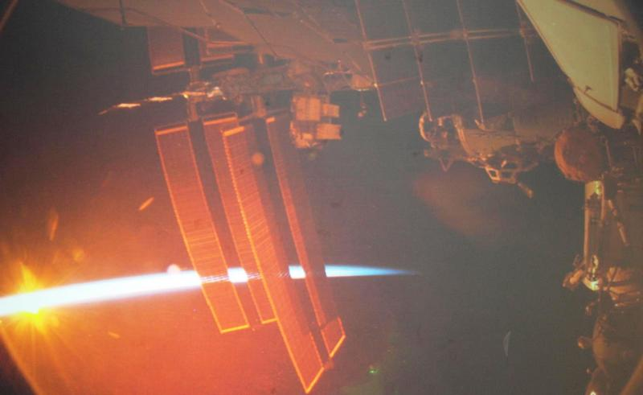
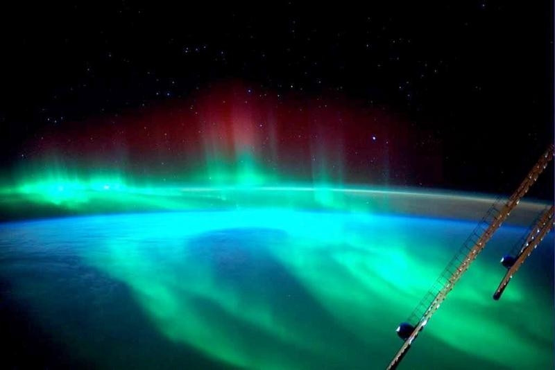
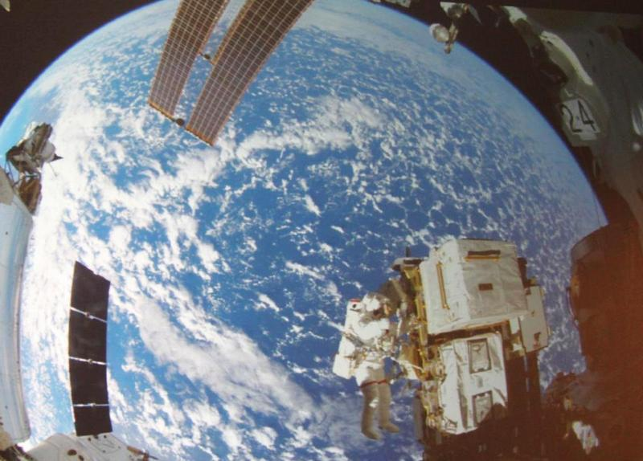
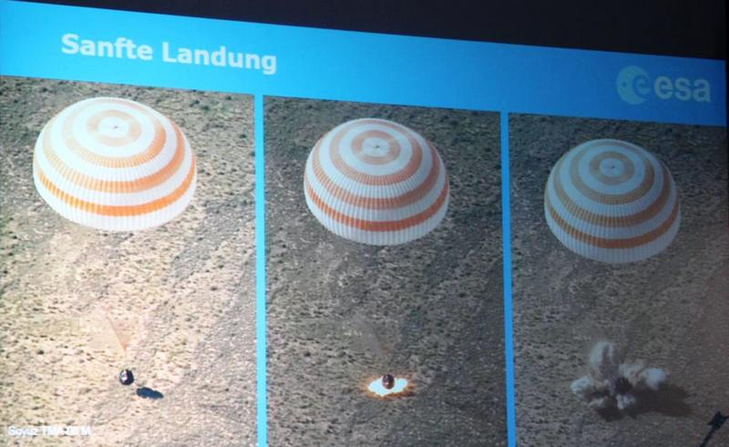
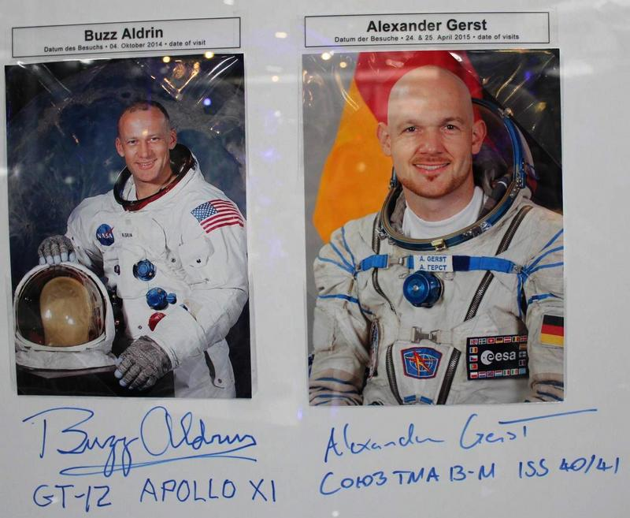

von Reiner Krauss

© R.Krauss
(rk) – Am Samstag, den 25. April 2015, besuchte der deutsche ESA-Astronaut und Forscher auf der ISS, Alexander Gerst, Europas größte Raumfahrtausstellung »Apollo and Beyond« im Technikmuseum Speyer und hielt einen Vortrag zu seiner Mission im All mit anschließender Autogrammstunde (weitere Informationen zur Person in den Subspace Link News).
Globales Planetenmanagement
Zur Einstimmung berichtete Professor Mike Rast vorher von den Erd- und Umweltbeobachtungen der ESA (Sitz in Rom), als, wie er selbst sagte, »Aufwärmer und Vorgruppe für Alex«, über die wissenschaftliche Forschung mittels Erdbeobachtungs-Satelliten. Die ESA besteht aus zweiundzwanzig Mitgliedsstaaten und verschreibt sich seit über 50 Jahren der friedlichen Erforschung der Erde und des Weltraums. Ganz wie nach Gene Roddenberrys Visionen von »den Abenteuern des Raumschiffs Enterprise«. Entsprechend schloss Rast seinen Vortrag mit den Worten des kürzlich verstorbenen Darstellers von Mr. Spock: »Live long and prosper«.
Nicht jedoch, ohne vorher darauf hinzuweisen, dass die Weltbevölkerung derzeit auf über 7,3 Milliarden angewachsen ist, die Waldrodung im Amazonas bedrohliche Ausmaße angenommen hat, die Umweltverschmutzung zunimmt und die Menschheit die Erde immer mehr überstrapaziert. Die Polkappen schmelzen, insbesondere nimmt ihre Dicke ab, und die Meere steigen langsam aber stetig. Ein nachhaltiges Planeten-Management ist längst überfällig.
Der Sache eine Chance geben

© R.Krauss
Unter großem Beifall betrat anschließend Alexander Gerst die Bühne und seine herzliche Art steckte sogleich das Publikum an. Ein erdverbundener, aber auch technikbegeisterter Mensch, der die Chance erhielt, seinen Traum von der Weltraumfahrt zu leben. Einfach mal probiert, so erzählte er, wohlwissend um die geringen Chancen bei der großen Anzahl an Bewerbern für das ESA-Astronautenkorps. Er wollte sich später nicht sagen müssen, er habe es nie versucht. Für ihn erfüllte sich sein Kindheitstraum.
In der übervollen Raumfahrthalle des Technikmuseums bekam er nun die Gelegenheit, seine Begeisterung für die Raumfahrt den Besuchern näher zu bringen. Begleitet von spektakulären Bildern auf der Leinwand, berichtete Gerst von seiner ISS-Mission.
Der Startknopf

© R.Krauss
Der Sojus-Start fand in Baikonur (Kasachstan) statt, mit an Bord waren außerdem der Russe Maxim Surajew und der US-Amerikaner Reid Wiseman. »Mit einem Knopf kann man das Raumschiff starten, das hat Spaß gemacht«, so Gerst. Kurz nach dem Start allerdings »hört und sieht man von innen gar nichts« Die Fenster sind noch verschlossen und die Raumanzüge dicht. Für rund acht Minuten gilt es 4,5 g (mehr als das Vierfache des Eigengewichts) beim Aufstieg auszuhalten.
Danach dauert es noch 6 Stunden und 30 Minuten bis zum Andocken an die ISS. Wie die Astronauten sagen »bis zum Einparken«.
Das Abheben ging entspannt von Statten. Raumfahrtveteran Surajew prahlte beim Start humorvoll mit seinem geringen Puls, um den beiden Neulingen zu zeigen, wie cool er war, so Gerst. Surajew fragte die Bodenkontrolle nach seinem Wert. Antwort: »Puls 72, aber Deiner ist der Höchste.«
Mission Blue Dot

© R.Krauss
Dass es Mithilfe von über hunderttausend Menschen weltweit gelang ein so gewaltiges Labor wie die Internationale Raumstation (ISS), in den Orbit zu bringen, faszinierte Alexander Gerst nicht nur, sondern die Eindrücke der ersten zwei Wochen auf der Station überwältigten ihn schlicht. Die Amerikaner sagen dazu »wie aus einem Feuerwehrschlauch trinken«.
Viel Zeit für Eingewöhnung blieb jedoch nicht und der Tagesablauf war strikt durchgeplant, beispielsweise mit täglich 2,5 Stunden Sport. Der Teamgeist war jedoch außerordentlich gut und zeigte, dass trotz politischer Probleme auf der Erde die internationale Zusammenarbeit in der Raumfahrt weiter ein Vorreiter für die Menschen bleibt, so Gerst.
In seiner Zeit auf der Station überwachte und betreute er über 160 wissenschaftliche Experimente zur Materialforschung, Medizin, Biologie, Physik und Astronomie. Alle Experimente können nachweislich so nicht auf der Erde durchgeführt werden. Im Bereich der Medizin gibt es schon heute ein Medikament gegen Osteoporose (Knochenschwund), das nur dank der ISS-Forschung entwickelt werden konnte.
Der Mensch ist flexibel
Bei seinem rund halbjährigen ISS-Aufenthalt, erlebte Alexander Gerst so einige Geschichten. Darunter schöne Momente, wie die Möglichkeit, in der knappen Freizeit die Live-Übertragung der WM-Spiele zu schauen, wobei die Amerikaner mit Alex um den Sieg des Spiels Deutschland gegen USA gewettet hatten. Zwei Amerikaner mit Irokesenschnitt zeigten anschließend wie das Spiel ausgegangen war.
Doch auch der Ideenreichtum und die Flexibilität des Menschen konnte Gerst beweisen. Bei einem neu zu installierenden Experiment konnte ein Sicherungsbolzen nicht entfernt werden, das Ganze drohte zu scheitern. Alexander Gerst kam auf die Idee, mittels seines Rasierschaums und einer Eisensäge den Bolzen zu zersägen, sodass keine Späne in die Umluft gelangten. Zwei Wochen lang wurde auf der Erde geprüft und nach einem »Go« gelang es, das Experiment erfolgreich einzubauen.
4,3 Terabyte Bilder

© R.Krauss
Alexander Gerst begeisterte die Menschen auf der Erde besonders mit seinen spektakulären Fotos aus dem Erdorbit. Eine kleine Auswahl konnten die Besucher in Speyer bestaunen. Darunter Schatten von Wolkenformationen am Rande des Tag-/Nachtübergangs. Sie erinnerten Gerst an »das Nichts, das die Erde frisst« (aus Die Unendliche Geschichte von Michael Ende). Neben fantastischen Bildern von Polarlichtern und den abendlichen Feuerwerken an den Küsten Italiens sah man aber auch die gewaltigen Rodungen im Amazonas (die sich teilweise über solch ein großes Gebiet erstrecken, dass sie nicht auf ein Foto passen), die Bomben in Kriegsgebieten und die Umweltverschmutzung in vielen Teilen der Erde. Gerst: »Was würde wohl ein Alien über die Intelligenz der Erdbewohner denken, wenn er sieht, wie sie ihren einzigen Lebensraum zerstören?« Für diese Worte erntete er kräftigen Applaus aus dem Publikum.
EVA wenig romantisch

© ESA
Seinen Weltraumausstieg, der EVA (Extravehikulare Aktivität, der Aufenthalt von Astronauten außerhalb ihres Raumfahrzeugs im freien Weltraum), konnte Gerst vor lauter Arbeit - alleine vier Stunden Vorbereitung und weitere sechseinhalb Stunden im Raumanzug außerhalb der ISS - wegen des Kampfes gegen den Innendruck und der Kommunikation und Beobachtung von vielen Parametern, fast nicht genießen. »Man vergisst vor lauter Arbeit, draußen zu sein«, sagte Gerst. Trotzdem blieb Gelegenheit, nachdem man sich tunlichst versichert hatte mit den beiden Sicherungsleinen verankert zu sein, die Hände loszulassen und durch das dünne Plexiglasvisier die Erde zu bestaunen.
Die wildeste Achterbahnfahrt

© R.Krauss
Die Rückkehr beschreibt Alexander Gerst als »die wildeste Achterbahnfahrt seines Lebens«. Nach dem Abkoppeln sprengt sich die Sojus in drei Teile, von denen nur die Hauptkapsel ein Hitzeschild hat. Der Rest verglüht beim Eintritt in die Atmosphäre. Nur durch die Luftreibung werden 28.000 km/h abgebremst und man erlebt 5 g Anpressdruck. Gerst verglich dies mit einem Formel 1 Wagen, der aus 200 km/h in einer Sekunde auf 0 km/h abbremst.
Auf das Entfalten der Bremsfallschirme folgte eine kurze Zeit der Ruhe, bis das kam, was die Russen als eine »sanfte Landung« bezeichnen. Gerst selbst verglich es mit einem Verkehrsunfall. Als Zugabe fing der Fallschirm nach der Landung noch mal Wind ein, sodass die Kapsel umkippte und über den Boden gezogen wurde. Gerst: »Reid (Wisemann) hing danach über mir und sagte: Mir ist schlecht«. Die Lacher im Publikum waren ihm erneut gewiss.
© R.Krauss
Alexander Gerst überreichte zu Beginn der Veranstaltung Gerhard Daum, Ausstellungsleiter von »Apollo and Beyond«, ein Exponat seines ESA-Trainingsanzugs und beeindruckte und begeisterte danach auch in der abschließenden Fragerunde, bei denen die Jüngsten die Ersten sein durften, mit seiner humorvollen und herzlichen Art die Besucher. Kein Wunder, dass die Schlange für die Autogrammstunde extra lang war.
Weiterführende Informationen zum Thema:
http://www.rnf.de/mediathek/video/astronaut-alexander-gerst-landet-im-technik-museum-speyer/ - TV-Bericht Rhein-Neckar Fernsehen
http://www.amazon.de/Begegnung-All-Mission-ISS-Blu-ray/dp/B00MJOP6B8/ref=sr_1_1?ie=UTF8&qid=1430031934&sr=8-1&keywords=alexander+gerst - Alexander Gerst Mission ISS - Begegnung im All (3D Blu-ray)

© R.Krauss